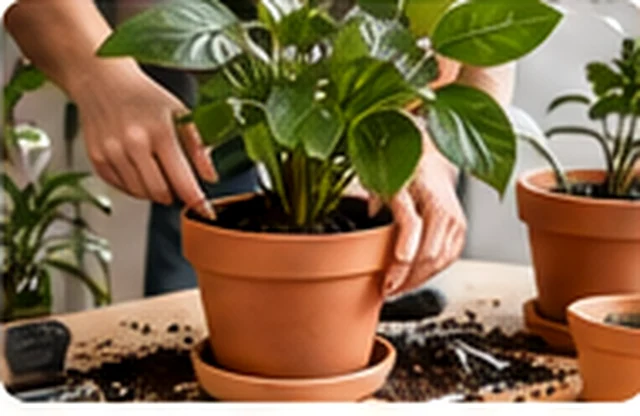
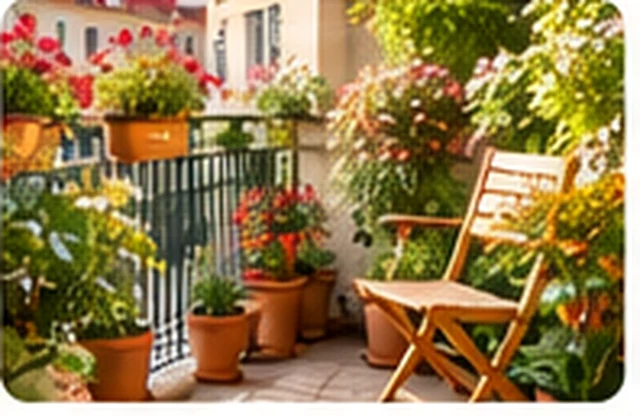
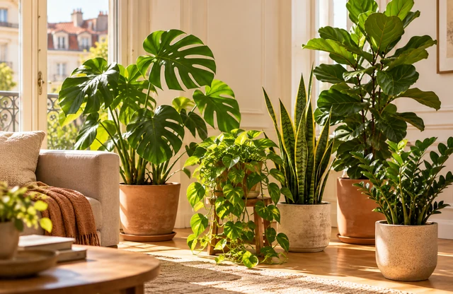
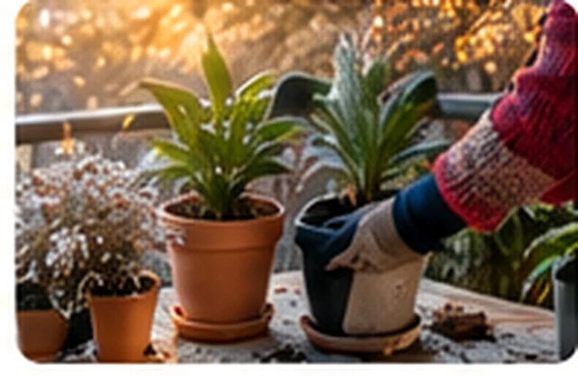

Umtopfen & Rückschnitt
Mehr Platz für Wurzeln, fachgerechte Pflege.
Gelbe Blätter, keine Blüten oder eine Pflanze, die plötzlich schlappmacht? Schicken Sie uns ein Foto. Wir schauen kostenlos drauf.
Foto-Diagnose jetzt kostenlos · Hausbesuche ab Winter 2026/27 geplant


Keine App, die irgendetwas verspricht. Sie schreiben uns — und wir schauen uns Ihr Pflanzenproblem an.
Foto der Pflanze an hallo@kastanie.wien senden
Dazuschreiben, wo sie steht und wie Sie gießen
Kostenlose Einschätzung innerhalb von 48 Stunden (werktags)
Oder schreiben Sie direkt an hallo@kastanie.wien
Foto als Anhang hinzufügen. Funktioniert der E-Mail-Link nicht, bitte die Adresse kopieren.
Bitte ein Foto pro Anfrage. Wenn wir etwas nicht sicher beurteilen können, sagen wir das offen.
Umtopfen, Rückschnitt, Balkonbepflanzung oder ein ganz neues grünes Zuhause – manchmal braucht es Fachleute. Kastanie bereitet kostenpflichtige Pflanzenpflege-Besuche mit Wiener Gärtnereien vor.

Mehr Platz für Wurzeln, fachgerechte Pflege.

Pflanzen auswählen und den Balkon begrünen.

Licht prüfen und passende Lieblingspflanzen für Ihr Zuhause auswählen.

Balkon und Pflanzen auf den Winter vorbereiten.
Zum Start sind einzelne Hausbesuche geplant. Regelmäßige Pflege könnte später folgen. Noch keine Buchung möglich; das Angebot hängt von verfügbaren Partnerbetrieben ab.
Über den Start in meinem Bezirk informieren →Sie wünschen sich professionelle Hilfe beim Umtopfen, Rückschnitt oder Begrünen Ihrer Wohnung oder Ihres Balkons? Melden Sie sich kostenlos mit Ihrer E-Mail-Adresse und Ihrem Wiener Bezirk an. Wir informieren Sie einmal, sobald passende kostenpflichtige Hausbesuche in Ihrer Nähe verfügbar sind.
Keine Buchung. Keine Verpflichtung. Kein Newsletter.
Die Warteliste gilt für zukünftige, kostenpflichtige Pflanzenpflege-Termine zuhause — nicht für die kostenlose Foto-Diagnose.
Die Anmeldung ist kostenlos. Hausbesuche sind noch nicht buchbar; Start und Leistungen hängen von verfügbaren Fachbetrieben ab.
Wenn das eingebettete Formular nicht angezeigt wird: Formular in einem neuen Tab öffnen ↗
Die Anmeldung wird von Zoho Forms verarbeitet. Datenschutzerklärung.
Was im Gewächshaus bestens wächst, steht zuhause manchmal viel dunkler. Hier ein Beispiel, wie stark das Licht abnehmen kann:
wo viele Pflanzen aufwachsen
direkt bei Ihnen zuhause
tiefer im Raum
z. B. Regal oder Kommode
Beispielwerte, keine festen Sollwerte. Jahreszeit, Ausrichtung und Fenstergröße verändern die tatsächlichen Lux-Werte.
Mehr über mögliche Ursachen erfahren ↓Unser Auge gleicht große Helligkeitsunterschiede aus. Pflanzen nicht. Schon etwas mehr Nähe zum Fenster kann helfen.
Pflanzen werden für den Verkauf oft bei optimalem Licht und guter Pflege kultiviert. Zuhause fehlen diese Bedingungen manchmal.
Warme, trockene Winterluft setzt empfindlichen Zimmerpflanzen zu. Abstand zur Heizung kann sinnvoll sein.
Weniger Wachstum bedeutet oft auch weniger Wasserbedarf. Prüfen Sie die Erde, statt nur nach Kalender zu gießen.
Foto-Diagnose heute kostenlos. Über geplante Hausbesuche informieren wir Sie, sobald es in Ihrem Bezirk losgeht.